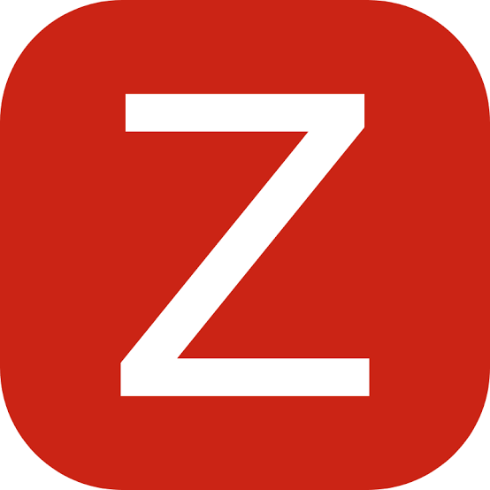
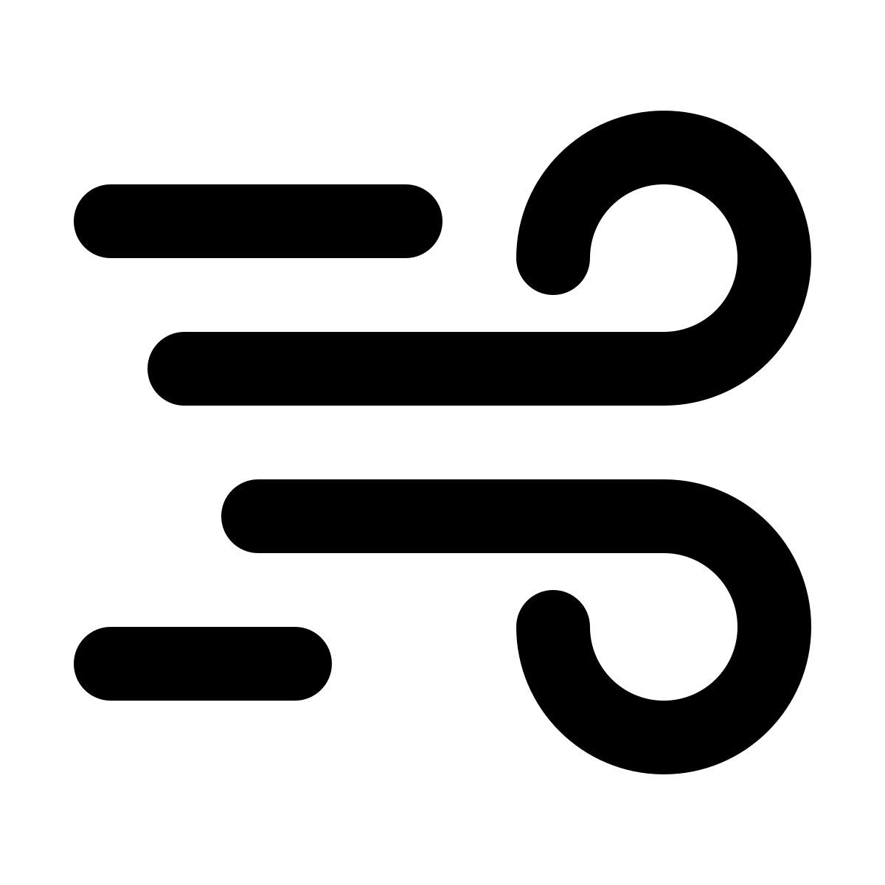
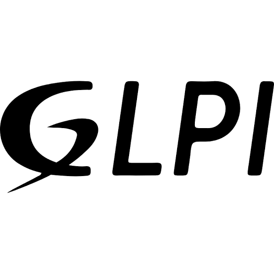
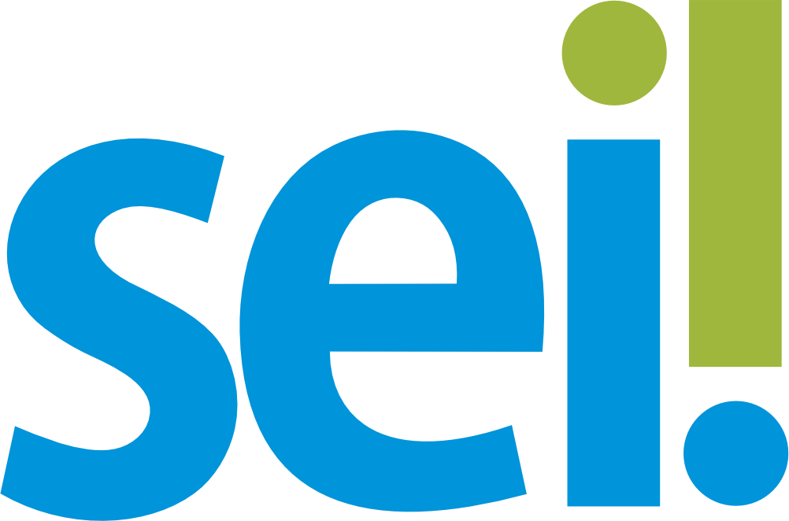

Sistemas Integrados
Acesse rapidamente as ferramentas de monitoramento e gestão da seção de manutenção de equipamentos.
Grafana
Monitoramento em tempo real de Carga e Bateria dos Nobreaks.
Acessar plataforma

Zabbix
Visualização de Triggers e Alertas SNMP da rede de Nobreaks.
Acessar plataforma

Automação Brises
Controle de Ar Condicionado e Climatização dos ambientes.
Acessar plataforma
SIGEQ
Sistema central para inventário e Gestão de Equipamentos.
Acessar plataforma

GLPI
Plataforma para Abertura e Acompanhamento de Chamados técnicos.
Acessar plataforma

SEI
Sistema Eletrônico de Informações. Gestão de Processos oficiais e Contratos.
Acessar plataforma